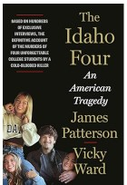

The Idaho Four: An American Tragedy
by James Patterson
Genre:Tradegy
Publication Year:2025
Publisher:Little, Brown and Company
Edition:1st Editions
Tag:Tragedy, love, Bestseller
The murders of four innocent college students attending the University of Idaho left us all with so many questions.
Now, after more than 300 interviews, James Patterson and prize-winning journalist Vicky Ward finally have some answers.
We know what it was like to live in Moscow, Idaho, on November 13, 2022, the day of the cold-blooded killings.
We know what the local police and FBI did right. And what they did wrong.
We’ve learned so much about the four heartbroken families—the Mogens, Goncalveses, Kernodles, and Chapins.
And we have the backstory for Bryan Kohberger, brilliant grad student, loner, apparent incel.
Now you are the jury.
The evidence is in.
James Patterson is the most popular storyteller of our time. He is the creator of unforgettable characters and series, including Alex Cross, the Women’s Murder Club, Jane Smith, and Maximum Ride, and of breathtaking true stories about the Kennedys, John Lennon, and Tiger Woods, as well as our military heroes, police officers, and ER nurses. Patterson has coauthored #1 bestselling novels with Bill Clinton, Dolly Parton, and Michael Crichton. He has told the story of his own life in James Patterson by James Patterson and received an Edgar Award, ten Emmy Awards, the Literarian Award from the National Book Foundation, and the National Humanities Medal.
Vicky Ward is a New York Times bestselling author, a magazine columnist, and an investigative reporter. She is the author of the bestselling books The Liar's Ball, The Devil's Casino, and Kushner, Inc. The Idaho Four is her first book with James Patterson. Read her Substack newsletter, "Vicky Ward Investigates," at vickywardinvestigates.com.
Vicky Ward is a New York Times bestselling author, a magazine columnist, and an investigative reporter. She is the author of the bestselling books The Liar's Ball, The Devil's Casino, and Kushner, Inc. The Idaho Four is her first book with James Patterson. Read her Substack newsletter, "Vicky Ward Investigates," at vickywardinvestigates.com.
ISBN-13:978-0316572859
Section:
Friction